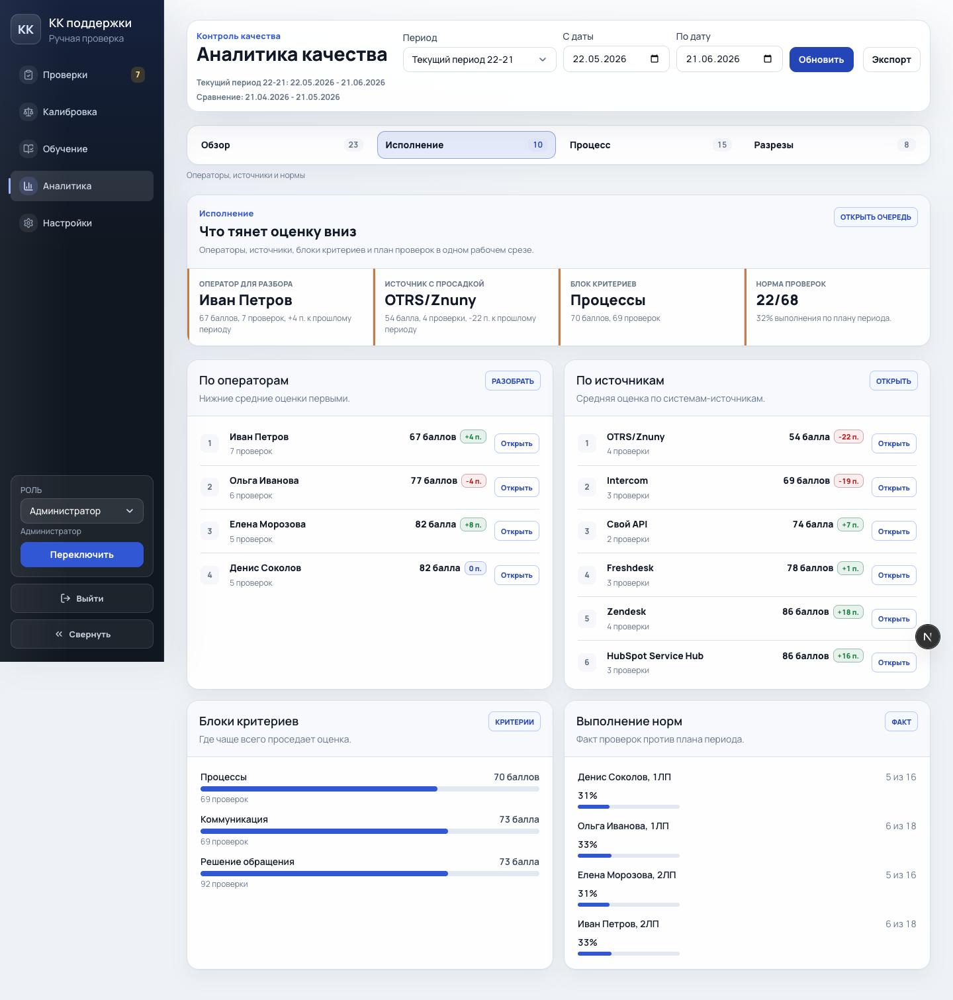
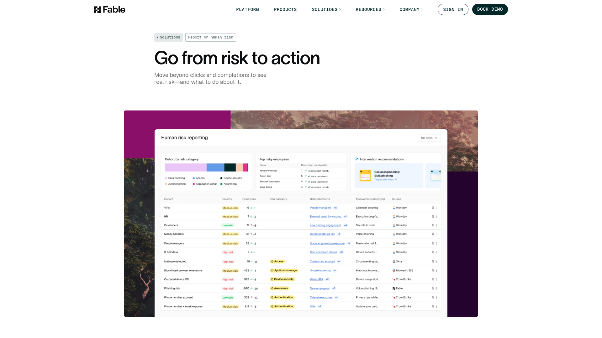

Главный шанс улучшения: сделать каждую вкладку отдельным рабочим режимом. Не просто разные данные в одинаковых карточках, а scoreboard для исполнения, incident cockpit для процесса и workbench для разрезов.
Current State

Текущий экран исполнения: смысл уже отличается от обзора, но визуальный язык панелей еще слишком одинаковый.
Improvement Ideas
1. Scoreboard для вкладки исполнения
Ранжированные списки должны читаться как операционный scoreboard: место, имя, оценка, дельта и короткий индикатор качества в одной строке.

Fable Security - risk table with color-coded operational rows [Lazyweb]
Why this works: строки становятся сканируемыми по приоритету, а не выглядят как обычный список ссылок.
Период, фильтры и вкладки уже собраны консистентно. Общий график качества больше не дублируется в под-разделах. Данные демо-режима достаточно богаты, чтобы показывать реальные различия между вкладками.
All References
Lazyweb MCP: Fable Security risk table, Intercom reporting dashboard. Web research fallback: Google Workspace Status Dashboard, Yahoo Finance comparison tables.